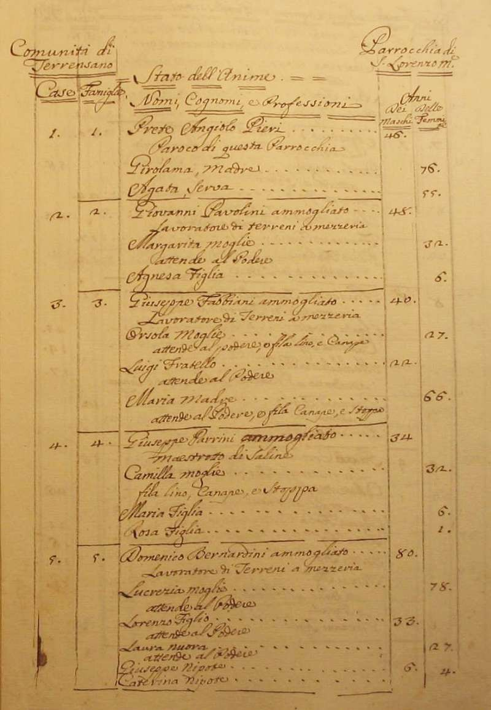
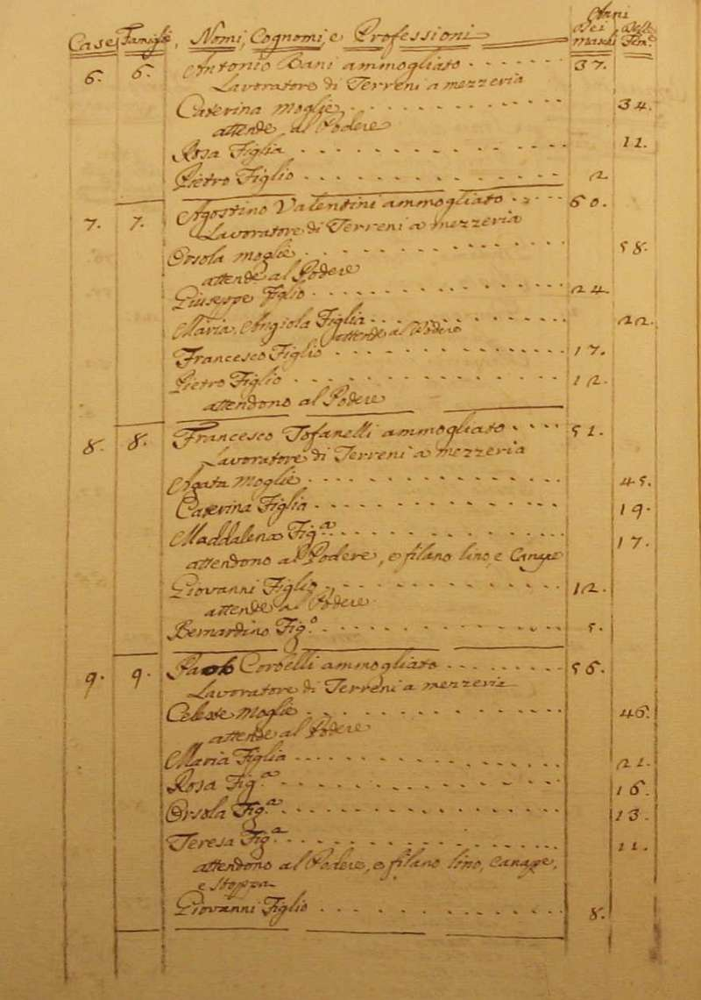
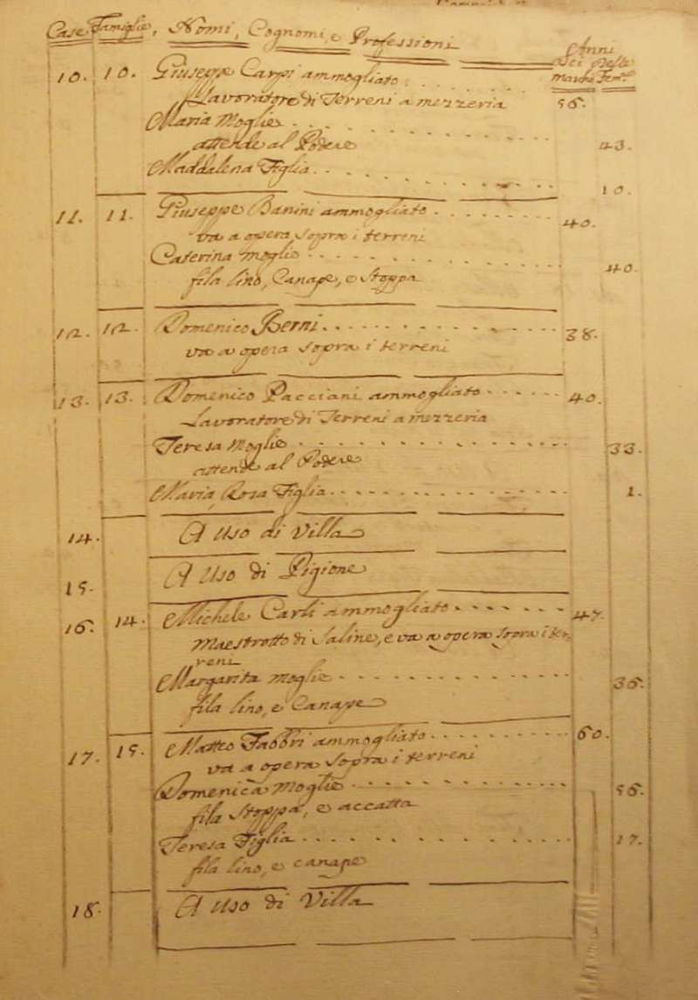
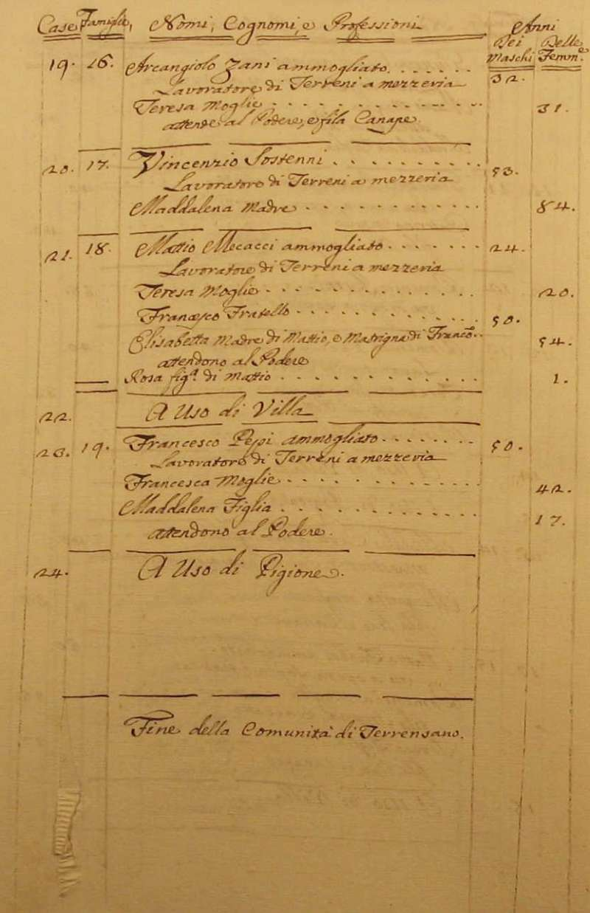
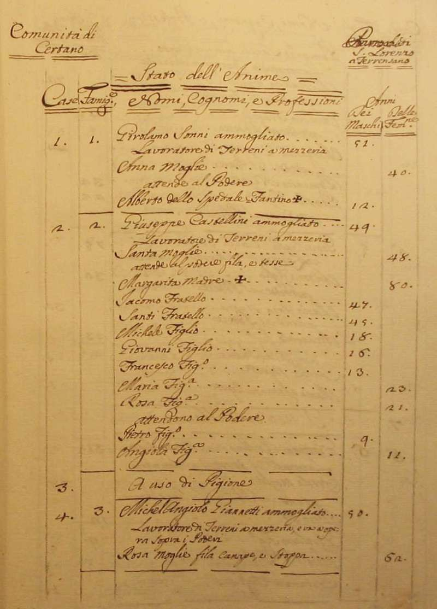
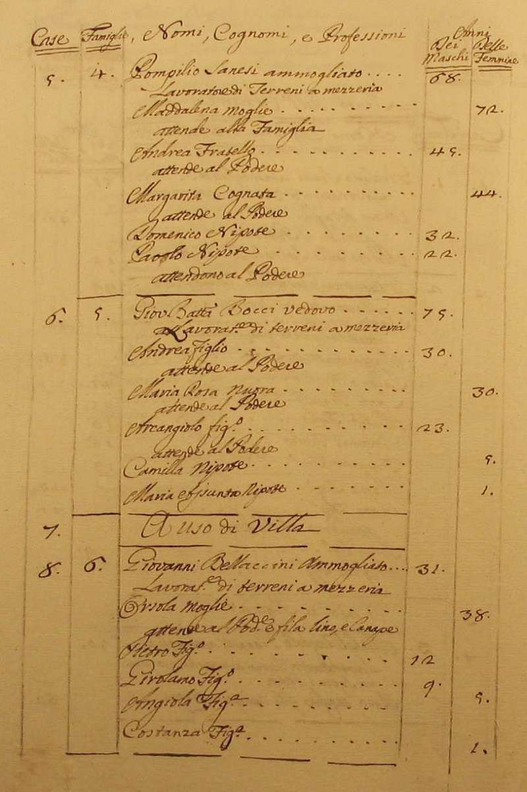
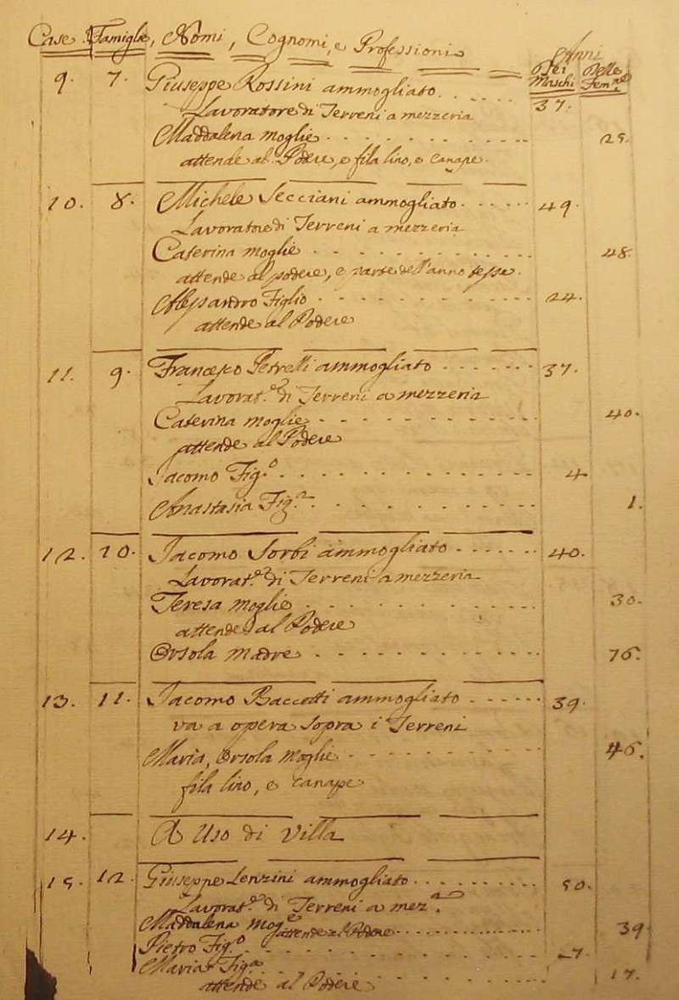
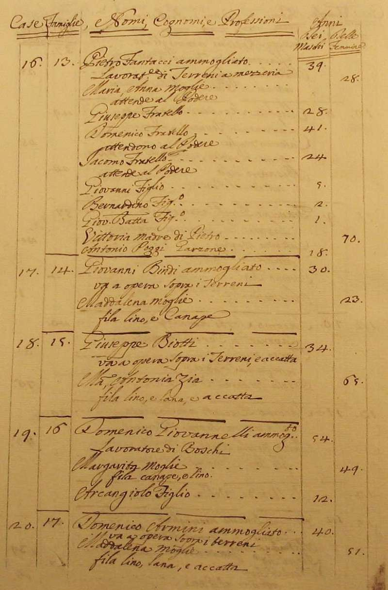
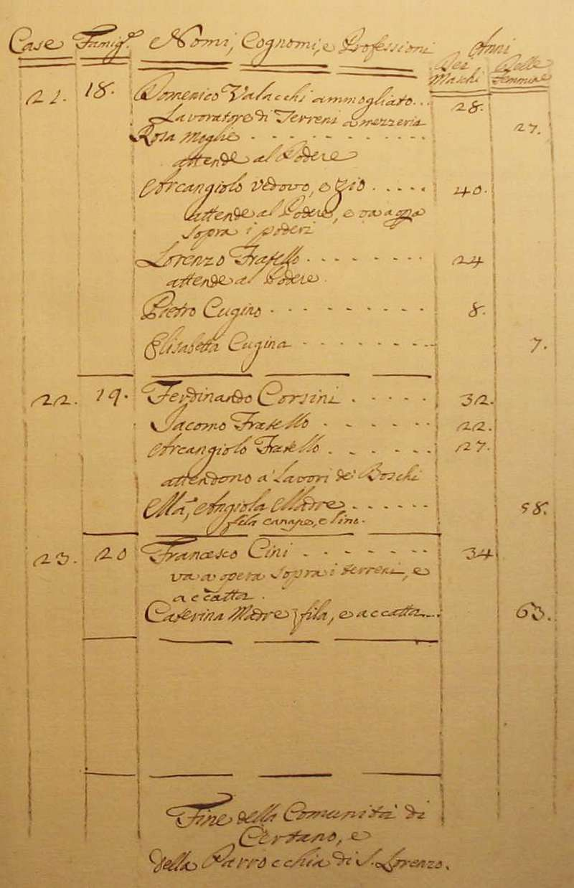

|
Ritorna all'indice delle parrocchie
Il numero abbinato ad ogni famiglia indica la relativa posizione nello Stato delle Anime
1 - Prete Angiolo Pieri - Paroco di questa Parrocchia
2 - Pavolini Giovanni - lavoratore di terreni a mezzeria
3 - Fabbiani Giuseppe - lavoratore di terreni a mezzeria
4 - Parrini Giuseppe - maestrotto di saline
5 - Bernardini Domenico - lavoratore di terreni a mezzeria
6 - Bani Antonio - lavoratore di terreni a mezzeria
7 - Valentini Agostino - lavoratore di terreni a mezzeria
8 - Tofanelli Agostino - lavoratore di terreni a mezzeria
9 - Corbelli Paolo - lavoratore di terreni a mezzeria
10 - Carpi Giuseppe - lavoratore di terreni a mezzeria
11 - Banini Giuseppe - va a opera sopra i terreni
12 - Berni Domenico - va a opera sopra i terreni - 1
13 - Pacciani Domenico - lavoratore di terreni a mezzeria
14 - Carli Michele - maestrotto di saline e va a opera sopra i terreni - 3
15 - Fabbri Matteo - va a opera sopra i terreni
16 - Zani Arcangiolo - lavoratore di terreni a mezzeria
17 - Sostenni Vincenzio - lavoratore di terreni a mezzeria - 2
18 - Mecacci Mattio - lavoratore di terreni a mezzeria
19 - Pepi Francesco - lavoratore di terreni a mezzeria
Comunità di Certano
1 - Sonni Girolamo - lavoratore di terreni a mezzeria - 3
2 - Castellini Giuseppe - lavoratore di terreni a mezzeria - 12
3 - Giannetti Miche Angiolo - lavoratore di terreni a mezzeria e va a opera sopra i poderi - 2
4 - Sanesi Pompilio - lavoratore di terreni a mezzeria
5 - Bocci Giovanni Battista - lavoratore di terreni a mezzeria
6 - Bellaccini Giovanni - lavoratore di terreni a mezzeria - 6
7 - Rossini Michele - lavoratore di terreni a mezzeria - 2
8 - Secciani Michele - lavoratore di terreni a mezzeria
9 - Petrelli Francesco - lavoratore di terreni a mezzeria
10 - Sorbi Jacomo - lavoratore di terreni a mezzeria
11 - Baccetti Jacomo - va a opera sopra i terreni
12 - Lenzini Giuseppe - lavoratore di terreni a mezzeria
13 - Fantacci Pietro - lavoratore di terreni a mezzeria - 9
14 - Bindi Giovanni - va a opera sopra i terreni
15 - Biotti Giuseppe - va a opera sopra i terreni e accatta - 2
16 - Giovannelli Domenico - lavoratore di boschi - 3
17 - Armini Domenico - va a opera sopra i terreni - 2
18 - Valacchi Domenico - lavoratore di terreni a mezzeria
19 - Corsini Ferdinando - attendono a lavori de boschi
20 - Cini Francesco - va a opera sopra i terreni e accatta - 2









Torna ad inizio pagina
Ritorna all'indice delle parrocchie
| |

|